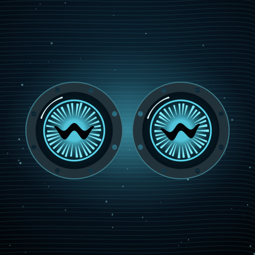

Plate I · Frontispiece · Ink & Phosphor, v0.1 · 27 November 2026
Ink & Phosphor
The art direction for Cthulhoo, a daily descent into the abyss.
Every day the deep asks one question with many true answers. Common answers keep you near the surface; rare ones pay out more cable. The look follows you down. It begins as a copperplate engraving printed on bone paper, and as the light fails the same lines turn into the light of the things that live in the dark.
Scroll to descend. The page sinks to 7,000 m.
Ink becomes light
Dark ink on paper at the surface; the page inverts below 200 m and every line glows.
Science, then dread
It starts as a sober 1920s oceanographic record. Horror creeps in through small errors.
Show less
Never the whole creature. An eye, a limb across a border, scale implied by snow.
Nothing bounces
Motion is heavy and slow, as in deep water. Idle things breathe once every seven seconds.
The wrong angle
Almost-regular geometry: frames a degree off true, one spine too many, a hatch angle that should not exist.
Plate IIColour0–7,000 m
Colour follows depth
One function, paletteAt(metres), gives the water, fog, glow and accent of the sea at any depth. Colours ease through OKLCH, and between zones the chroma dips: the light dies before the next light appears. The strip below is drawn live from that function; the marker is you.
0 mwater · fog · glow · accent7,000 m
The tier rule
A rarity tier shines with the glow of its zone. A tier-3 answer has the light of the Stygian Dark, wherever you are when you give it.
Plate IIITypethree voices
The tome, the record, the log
The tomeIM Fell English & SC · titles, zones, depths
The Cyclopean Abyss 4,312 m
The recordEB Garamond · questions, answers, body
Name a creature that lives below a thousand metres. Every true answer counts; the rarer it is, the deeper you sink.
The logSpecial Elite · the input, readings, telegrams
27.XI · 04:12 — DEPTH 4,312 M — 430 ATM — 2.6 °C — LAMP FAILING
step 6Dreaming
step 4The Gloaming
step 2Name a sunken ship.
step 0Body text, 16 to 17.6 px, fluid with the viewport.
step −2PLATE LABELS · READINGS
All three are free: SIL Open Font License (IM Fell, EB Garamond) and Apache 2.0 (Special Elite). Self-hosted in art/fonts, so the game works offline.
Mesopelagic200–1,000 mlamp amber
The Gloaming
Where the light gives up.
Plate IVThe instrumentscomponents.css
Questions, answers, telegrams
Every component takes its colours from the zone it is in. Scroll back up and these change with the water.
Descent No. 214 · TodayTwenty-seven NovemberCategory: the living deep
Name a creature that lives below a thousand metres.
Surface telegraph04:12
Rare answer received stop paying out cable stop four hundred and twelve metres stop do not answer the voice stop
Log
Hatch sealed. Lamp lit.
Passed 200 m. Daylight gone.
Lights outside the glass. Not ours.
Cable paid out: 412 m.
Bathypelagic1,000–4,000 mbiolume cyan
The Stygian Dark
Lights that are not ours.
Plate VRaritysix tiers and a refusal
Specimens, by how few people know them
Each answer is tagged like a museum specimen. Its seal is a radiolarian, the glass skeleton of deep-sea plankton, and it grows stranger with rarity: more spines, then a star, then an eye. Odd numbers only. Nothing down here is quite symmetrical.
AnglerfishCommonplace+120 m
Gulper eelCurious+260 m
Vampire squidObscure+480 m
BarreleyeArcane+820 m
Bigfin squidForbidden+1,240 m
Pseudoliparis swireiUnspeakable+1,900 m
KrakenRefused+0 m
Example answers and depths are illustrative. The real scoring comes from the game.
Plate VIThe Drowned Scriptsixteen glyphs
An alphabet that hangs
An invented script whose letters hang from a waterline, the way weed and chain hang from a hull. Glyphs join along that line into words. It decorates borders, loading states and seals, and it is what the madness effect reaches for when a letter goes wrong.
The true name of the Drowned City
eye · coil · gate · sleeper. It is never written in letters.
Abyssopelagic4,000–6,000 meldritch green
The Cyclopean Abyss
Stones cut by no human hand.
Plate VIIThe bestiarytextures/silhouettes
Seen as an absence of light
Silhouettes for the abyss renderer, filled in a single colour so they can be lit, fogged or used as masks. The rule is to show less: cut them by the frame, half-hide them in murk, and never light one fully.
Something passingleviathan.svg · in the game, show a third of it at most
Tentacles risingtentacles-rising.svg · roots lost in fog
A limb crossingtentacle-crossing.svg · far water
Anglerfishanglerfish.svg · the lure is its own layer
Medusajellyfish.svg
Siphonophoreone animal, many
Your vesselbathysphere.svg
The Drowned Citydrowned-city.svg · tiles sideways, two depths of stone
Plate VIIIMotion & madnessnothing bounces
Heavy water
Breathe
Anything idle pulses once every 7 s, the breath of a sleeper. Never faster.
Ink bloom
New things arrive as ink dropped in water: blurred and spreading, then settling, 1.2 s, ease surface.
Shudder
A refused answer shudders once and stops, damped like a hull under pressure. 520 ms. No springs.
Sink
Things leave downward, accelerating as if pulled: ease sink, 700 ms.
Descent
Depth eases like a cable paying out, 2.4 s in and out. Marine snow rises past you while you fall.
Reduced motion
Every effect becomes a 200 ms fade, and the madness stops rewriting text.
Bloom
A new specimen
Shudder
The deep refuses
Breathe
A sealed answer
Arcane
madness.js
In his drowned house the sleeper waits, dreaming of you.
Rises with depth from 2,500 m. Letters briefly become look-alikes, colours split, marks crawl onto words, a glyph of the Drowned Script replaces a letter. Screen readers always get the clean text.
Hadopelagic6,000–7,000 ma colour out of space
The Dreaming Deep
It knows you are coming.
Plate IXMarks & instrumentslogo · icons
Two portholes, watching
The double O of the name is a pair of riveted bathysphere portholes, and each one is an eye with a cuttlefish's W-shaped pupil. On a phone it is the app icon: two eyes in the dark.

Plate XSounddirection for the game's audio
What the deep sounds like
One drone on D that never stops, and layers that come and go with depth. As you sink a low-pass filter closes; at the floor it opens again into a chord that never resolves. No jump scares: dread is a held note, not a loud one.
Zone
What you hear
Interval
The Shallows
Wind in rigging, gulls far off, a bell buoy, water slapping the hull.
open fifth
The Gloaming
The hull creaks as pressure builds. Sonar pings, unanswered at first.
minor third
The Stygian Dark
Sub-bass drone, a choir pitched down an octave, faint clicks of living things.
tritone enters
The Cyclopean Abyss
Stone resonance, bowed metal, slow clusters a semitone apart.
minor second
The Dreaming Deep
Breathing on a seven-second cycle. A heartbeat that is not yours.
no resolution
UI sounds: a typewriter key for each letter, a brass dial tick per 100 m, a struck bowl for a rare answer, a muffled low cluster for a refusal. The full brief, with instruments, intervals and pacing, is in docs/art/07-motion-and-sound.md.
Plate XIThe kitwhere everything lives
Everything here is in the repository
The game builds on these files directly. Change a colour in one place and every screen follows.
art/tokens/
Colour, type, spacing and motion. Edit tokens.json, then rebuild tokens.css and tokens.js.
art/js/depth.js
paletteAt(m) gives the sea's colours at any depth. applyDepth(el, m) re-themes a page.
art/js/madness.js
createMadness(el) lets short text go wrong as you sink. Screen readers always get the clean text.
art/css/
Fonts, base styles and the components on this page: plates, fields, buttons, specimen tags, the sounding line, telegrams.
art/glyphs/
Six rarity seals and the refusal, plus the sixteen letters of the Drowned Script, as files and sprites.
art/icons/ · art/logo/
Eighteen interface icons; the wordmark, lockup, mark, app icon and favicon.
art/textures/
Paper, foxing, film grain, murk, hatching tiles, and the creature silhouettes. Every tile repeats seamlessly.
art/fonts/
IM Fell English and EB Garamond (SIL Open Font License), Special Elite (Apache 2.0). Free to ship.
docs/art/
The style bible, and this page with its concept shader in showcase/.
The lamp gutters. The depth gauge has stopped turning.